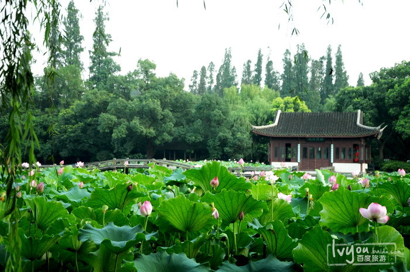

杭州西湖
-
杭州西湖是世界文化遗产，江南三大名湖之一，首批国家重点风景名胜区，首批全国文明风景旅游区示范点，中国十大名胜古迹、中国主要的观赏性淡水湖泊之一，在中国的历史文化和风景名胜中占有重要地位。

说起西湖的来历，有着许多优美的神话传说和民间故事。相传在很久很久以前，天上的玉龙和金凤在银河边的仙岛上找到了一块白玉，他们一起琢磨了许多年，白玉就变成了一颗璀璨的明珠，这颗宝珠的珠光照到哪里，哪里的树木就常青，百花就盛开。但是后来这颗宝珠被王母娘娘发现了，王母娘娘就派天兵天将把宝珠抢走，玉龙和金凤赶去索珠，王母不肯，于是就发生了争抢，谁知王母的手突然一松，明珠就降落到人间，变成了波光粼粼的西湖，玉龙和金凤也随之下凡，变成了玉龙山（即玉皇山）和凤凰山，永远守护着西湖。